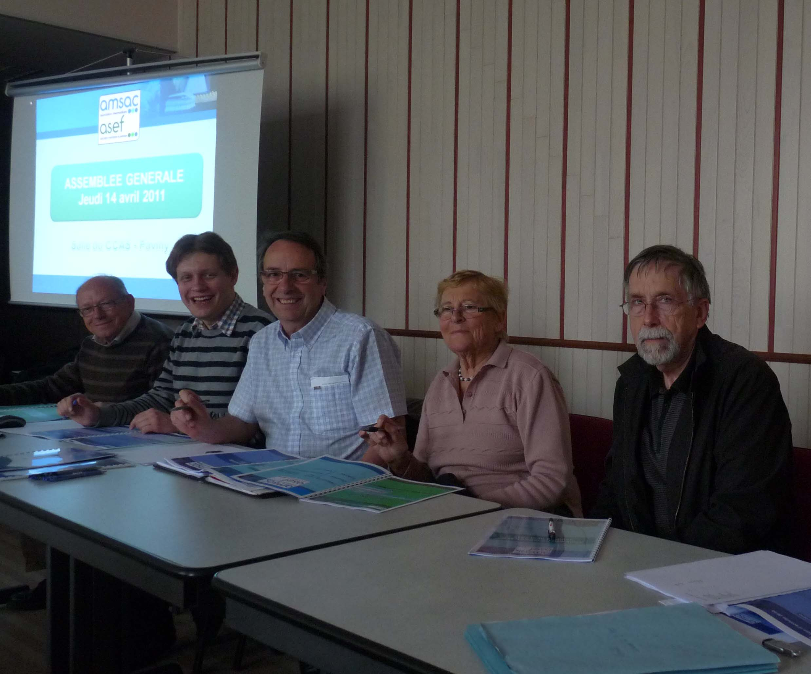

Jeudi 14 avril 2011
Assemblée Générale AMSAC-ASEF
L'Assemblée Générale de nos deux structures s'est déroulée le jeudi 14 avril 2011 dans la salle du CCAS de la Mairie de Pavilly.
En préambule, le Président a présenté les dernières réunions avec la DIRECCTE et Pôle Emploi.
AMSAC - L'activité 2010 en quelques chiffres
- 328 inscrits au 31 décembre
- 169 personnes mises à dispositon (121 femems et 48 hommes)
- 38 453,48 heures effectuées
Sur les 169 personnes mises à disposition, 25 sont sorties vers un emploi : 12 CDI, 2 CDD de plus de 6 mois et 11 CDD de moins de 6 mois.
Les objectifs de la CPO conditionnant notre fonctionnement ont été atteints sur 2010
AZEF - L'activité 2010 en quelques chiffres
- 47 personnes ont travaillé pour la structure
- 44 clients ont bénéficié des services de l'ASEF.
- 13 007,79 heures effectuées.
- 1er Fécrier 2010 : Lancement de l'activité prestataire simple ASEF
- 17 Novembre 2010: Obtention de l'agrément qualité prestataire ASEF
- Développement d'un partenariat de formation pour les futurs acteurs de l'aide à
domicile.

Dans la presse ...
- Courrier Cauchois du 22/04/2011